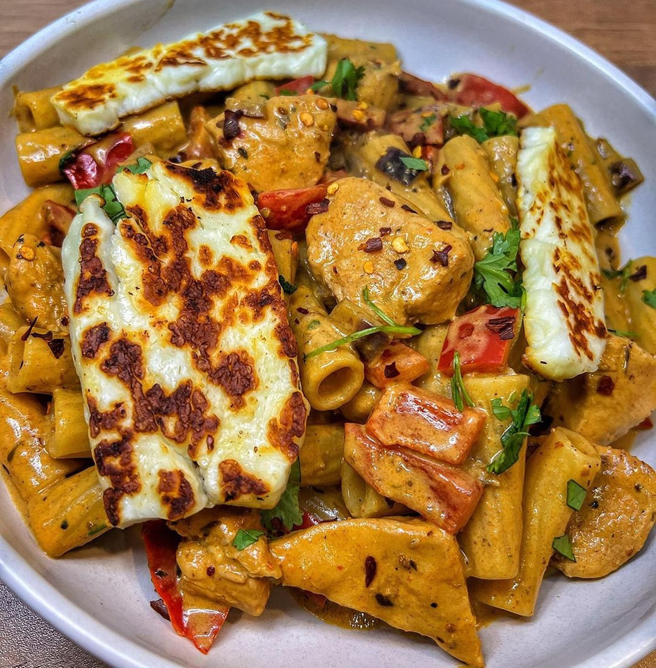

Cajun Halloumi Pasta

Description
A delicous, quick to make creamy Cajun pasta with perfectly fried halloumi. This surprisingsly low-calorie meal will be certain to leave you satisfied.
Ingredients
- 300g spaghetti
- 140g halloumi
- 1tbps smoke paprika
- 1/2tbps garlic granules
- 2tbps Cajun spices
- 3 garlic cloves
- 1tbs tomato puree
- 120ml light single cream
- Spinach to taste
Steps
- Pop your spaghetti onto boil with plenty of salt
- Fry off halloumi with the seasonings until it's browned and crispy
- Add in the garlic and tomato puree and cook for another few minutes
- Add in the cream and pasta, mix well and add in pasta water until you reach the desired consistency
- Add in the spinach and let it cook for a final few minutes.